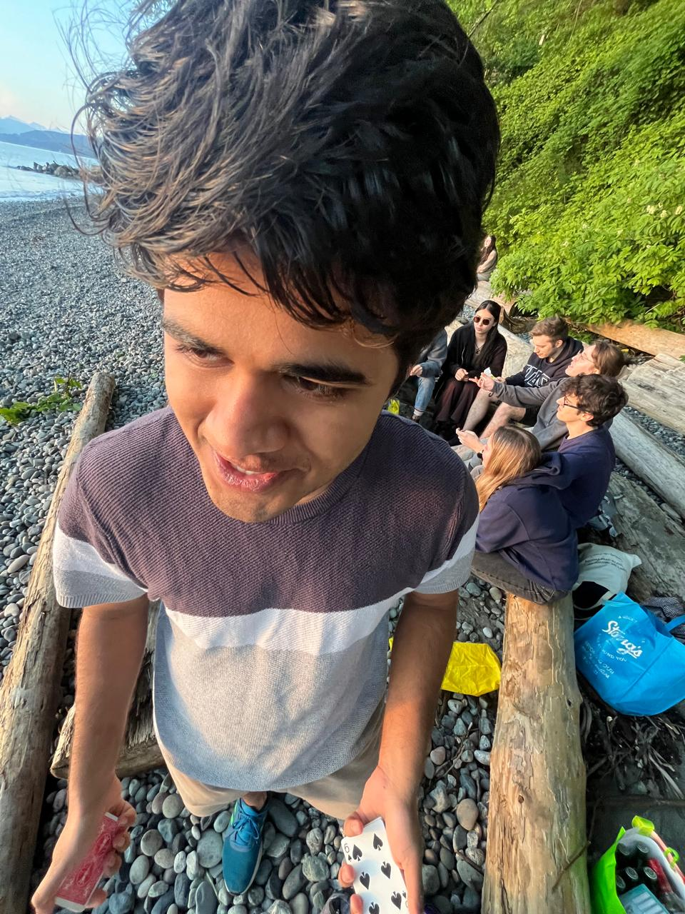

I'm a physics student at the University of British Columbia, with coursework spanning data structures and algorithms, software engineering, and machine learning. Most of what I know outside a classroom I taught myself by building something until it broke, then finding out why — this site is where I write that part down.
I currently direct SDK development at XOR Technology Inc., where I work on a lightweight neural network inference engine for low-power microcontrollers, including binary neural network (BNN) layers written in C for embedded deployment. I'm also a teaching assistant in UBC's Physics department (electricity & magnetism, wave dynamics), and an early member of PARSEC (Pacific Rim Space Exploration Corporation)'s electronics team, working on the LunaPure project.
My interests sit at the intersection of embedded systems, computational physics, and machine learning — mostly the parts where you have to care about both the mathematics and the number of bytes it costs you.
Elsewhere
- Email: atharv.sachin.bhalerao@gmail.com
- GitHub: github.com/imathrock
- Résumé: atharv-bhalerao-resume.pdf
- Location: Vancouver, BC, Canada
About this site
This is a hand-written notebook, not a generated one. New writing appears on the blog when there is something worth writing down — a project, a proof, a piece of hardware that finally cooperated. See the first entry for more on why it exists.